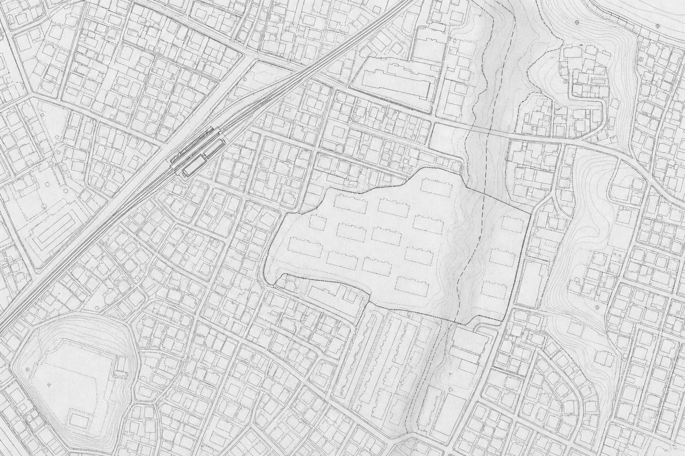

都市整備部 伺い
本形町東側
地形・排水調査依頼計画書
- 起案日
- 2022年9月16日
- 起案者
- 佐久間 圭
- 決裁日
- 2022年9月20日
承認者村山9.20起案者佐久間9.16
起案理由
2022年9月3日に開催した住民説明会において、計画地東側は旧地形の「下原谷戸」に重なっており、降雨後に水が滞留するとの指摘があった。
既往資料のみでは、現況の地盤、地下水及び排水条件を十分に把握・判断することが困難であるため、事業者に対し、現地調査の実施を求めるものである。

代々木下原駅計画地計画地東側下原谷戸旧地形
| 1 | 造成地盤の状態 |
|---|---|
| 2 | 地下水の位置と変化 |
| 3 | 敷地から道路への排水経路 |
伺い事項
東湾都市開発株式会社に対し、第三者である調査会社による地盤、地下水及び排水条件に関する現地調査を実施するよう、文書により要請してよいか伺います。
併せて、調査開始前に、調査会社名、調査範囲及び実施期間を記載した実施届を区へ提出するよう求めることとします。
なお、調査会社の選定について事業者から相談があった場合には、区内において地盤・地下水調査の実績を有する京西地盤解析株式会社を参考事業者として紹介することとします。ただし、調査会社の選定及び契約は、事業者の責任において行うものとします。